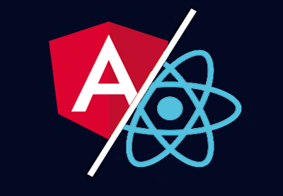

Change is the only constant. This applies to your professional life as well. Up-skilling yourself is a need nowadays, the reason is pretty simple, technology is evolving very quickly. I have listed the top 10 trending technologies, which are expected to acquire a huge market in 2020.
10.RPA (Robotic Process Automation)
Generally, any desk job in any industry involves tasks that are repetitive in nature and can be automated. RPA or Robotic Process Automation allows you to automate such routine and repetitive tasks. You don’t need to write any code to automate repetitive tasks.
9. BIG DATA
Big data refers to problems that are associated with processing and storing different types of data. Most of the companies today, rely on big data analytics to gain huge insight about their:
1. customer,
2. product research,
3. marketing initiatives and many more.
For your surprise, big data led Germany to win the world cup.
Hadoop and Spark are the two most famous frameworks for solving Big Data problems.
8. Intelligent Apps
1. I-Apps are pieces of software written for mobile devices based on artificial intelligence and machine learning technology, aimed at making everyday tasks easier.
2. The involves tasks like organizing and prioritizing emails, scheduling meetings, logging interactions, content, etc. Some familiar examples of I-Apps are Chatbots and virtual assistants.
7. Internet of Things (IoT)
1. Another buzzword that no longer remains a buzzword but has become a full-fledged technology ecosystem in itself.
2. IoT essentially is connecting many devices and creating a virtual network where everything works seamlessly via a single monitoring center of sorts.
3. IoT is a giant network of connected devices – all of which gather and share data about how they are used and the environments in which they are operated.
This includes everything from your:
1. mobile phones,
2. refrigerator,
3. washing machines to almost everything that you can think of.
6. DevOps
This is the odd one out in the list. It is not a technology, but a methodology.
DevOps is a methodology that ensures that both the development and operations go hand in hand. DevOps cycle is picturized as an infinite loop representing the integration of developers and operation teams by:
1. automating infrastructure,
2. workflows and
3. continuously measuring application performance.

5. Angular and React
1. Angular and React are JavaScript based Frameworks for creating modern web applications.
2. Using React and Angular one can create a highly modular web app. So, you don’t need to go through a lot of changes in your code base for adding a new feature.
3. Angular and React also allows you to create a native mobile application with the same JS, CSS & HTML knowledge.
4. Best part – Open source library with highly active community support.

4. Cognitive Cloud Computing
1.Cognitive Cloud is an extended ecosystem of traditional Cloud and Cognitive Computing.
2. It’s due to this, you can create Cognitive Computing applications and bring to the masses through cloud deployments. Cognitive computing is considered as the next big evolution in the IT industry.
3. It converses in human language and helps experts in better decision making by understanding the complexities of Big Data. Its market size is expected to generate revenue of $13.8 billion by 2020 and is one of the top 10 trending technologies to consider this year.
4. Big brands such as IBM, Google, Microsoft, Cisco have already started implementing this next-gen tech to gear up for the upcoming market.
3. Augmented Reality and Virtual Reality
1. Virtual is real! VR and AR, the twin technologies that let you experience things in virtual, that are extremely close to real, are today being used by businesses of all sizes and shapes. But the underlying technology can be quite complex. 2. Medical students use AR technology to practice surgery in a controlled environment. 3. VR on the other hand, opens up newer avenues for gaming and interactive marketing.
2. Blockchain
1. This is the tech that powers bitcoins, the whole new parallel currency that has taken over the world.
2. Interestingly, blockchain as a technology has far-reaching potential in everything from healthcare to elections to real estate to law enforcement.
1. Artificial Intelligence (AI)
1. AI existed even before the internet was born, but it is now that the data processing and compute power backbone became strong enough to sustain an entire technology
by itself.
2. AI is everywhere today, from your smartphones to your cars to your home to your banking establishment.
3. It is the new normal, something the world cannot do without.